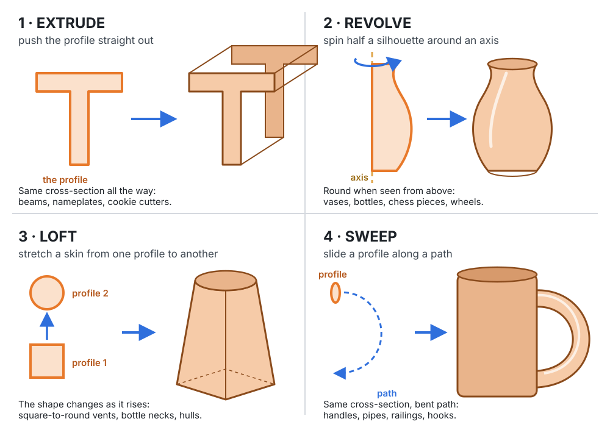
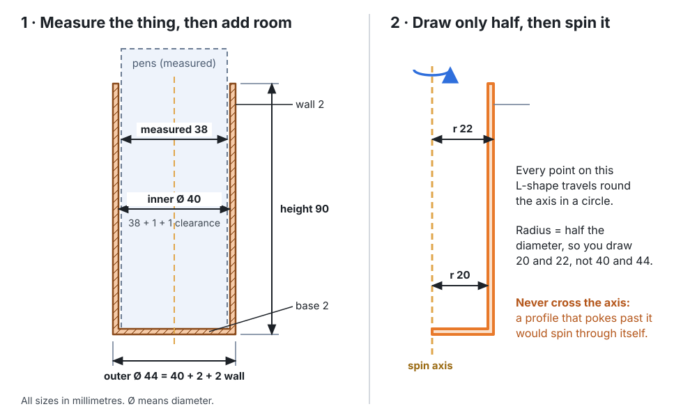

3D Design · Shared skills · Profiles
Draw It Flat, Make It Solid
Pick up a mug. Its body is one curved line spun around a centre, like clay on a potter's wheel. Its handle is one small shape dragged along a curve. A pipe, a bottle, a chess piece, a picture frame, a boat hull: almost every made object is a flat drawing pushed, spun, blended or dragged into 3D. In this lesson you draw those flat drawings yourself, watch them become solids, and then design a cup around something you have actually measured.
Start with real objects
Put four things on the table: a plastic ruler or a cookie cutter, a bottle, a funnel or a square-to-round vent, and a mug or a coat hook. Look at each one from the end, from the top and from the side, and ask: what flat shape, moved how, would make this?
1 · Four moves from 2D to 3D
Every one starts with a profile: a flat, closed outline drawn on a sketch plane. What changes is how the profile moves through space.

| Move | You draw | You choose | Real things made this way |
|---|---|---|---|
| Extrude | One closed profile | Distance (and, in many apps, a taper or twist) | Beams, brackets, signs, cookie cutters, phone stands |
| Revolve | Half a silhouette beside an axis | The axis and the angle (360° for a whole turn) | Cups, bottles, bowls, wheels, knobs, chess pieces, lamp shades |
| Loft | Two or more profiles on different planes | The order, and how the points line up | Square-to-round ducts, bottle shoulders, boat hulls, wings |
| Sweep | A profile and a path | Whether the profile stays square to the path | Handles, pipes, railings, hooks, picture-frame moulding |
Every CAD app has all four, usually under these exact names, and they all work from a sketch the same way. Extrude is the one you will use most:
The word loft comes from shipbuilding: hull lines were drawn full size on the floor of a big upstairs room called the mould loft, and smooth curves were bent through them to shape the planks.
2 · Profile Lab
Choose a move, then draw. Click an empty spot to add a point, drag a point to move it, and select a point and press Delete to remove it ([ and ] step through points; arrow keys nudge one 1 mm). The solid on the right is built by the same geometry engine and shape code as Workbench, so Open in Workbench gives you exactly this part to keep building and print.
Try these
- Revolve: drag the top point out and in and watch the vase change. Turn Spin down to 180° to see the inside, then set Hollow wall to 2 mm: the solid becomes a vase, and the readout tells you how much water it holds.
- Extrude: draw the outline of your initial, then turn up Twist. Drop Top size to 0% and an extrusion becomes a pyramid.
- Loft: keep the bottom square and give the top fewer points (a triangle). Push Middle size above 100% for a bottle, below for a waist.
- Sweep: drag the path into a hook. Make the profile wider than the bend is tight and see what happens at the corner (the joint is welded instead of folding through itself).
3 · What makes a good profile
A CAD app refuses a profile, or makes a broken solid, for the same few reasons everywhere. The Profile Lab checks every one of them:
4 · The math of a revolve: Pappus's theorem
About 1,700 years ago, the Greek mathematician Pappus of Alexandria described a shortcut for the volume of any solid made by spinning a flat region around an axis that doesn't cross it:
A 10 mm × 20 mm rectangle against the axis has area 200 mm² and its centroid 5 mm out, so it spins into 200 × 2π × 5 = 6,283 mm³: exactly π × 10² × 20, the cylinder formula. Choose Revolve in the Profile Lab with Hollow wall at 0 and it does this sum for whatever you draw, next to the volume the geometry engine measures. The engine's answer is a little smaller, because its "circle" is really a polygon with flat sides; more sides, smaller gap.
5 · Hands-on task: a cup sized from a real measurement
Design a revolved cup, sleeve or holder that fits around something real: a can, a jar, a glue stick, a plant pot, a bundle of markers held with a rubber band. A cup designed from a guess either jams or rattles; one designed from a measurement drops in first time.

Steps
- Measure the item's diameter three times with calipers and use the average (see Measure and Fit for how). For a bundle, measure the widest way across. Measure how tall it is too.
- Choose a clearance per side. Big round things print a little out of round, so cups use more room than the 0.2–0.5 mm fits for small parts: about 0.5 mm for snug, 1 mm to drop in easily, 2 mm for loose.
- Choose a wall: 1.2 mm is three beads (the least that survives a backpack), 2.4 mm feels like a real cup.
- Choose the depth: how much of the item should sit inside. A pencil cup holds the pencils' bottom half; a can sleeve covers most of the can.
- Check the numbers in the designer below, press Load into the Profile Lab to see it in 3D, then Open in Workbench to add a handle, a name or a pattern, and print it.
- Test it: measure the printed inside diameter with the caliper's inside jaws, put the item in, and record how it fits.
| Item and what I measured | |||
|---|---|---|---|
| Three readings (mm) | |||
| Average diameter (mm) | |||
| Clearance, wall, depth (mm) | |||
| Planned inside Ø · outside Ø (mm) | |||
| Predicted capacity (mL) | |||
| Printed inside Ø (mm) | |||
| How it fit · what I'd change | |||
Use Save answers in the lesson's heart | save | print pill to keep the record sheet in your browser. Want a handle? Open the Lathe mug template in Workbench: the body is a revolve and the handle is a sweep, fused into one printable piece.
Pick your level
K–2 · Spin a paper shape
Cut half a vase from card, tape its straight edge to a pencil, and roll the pencil fast between your palms: the blur looks like a whole vase. Sort classroom objects into "same all the way", "round from the top" and "bent".
3–5 · Name the move
Find one object for each move and sketch its profile. In the Profile Lab, make a vase (revolve) and a name tag (extrude). Measure a marker and design a cup that holds it.
6–8 · Size it from data
Do the whole cup task with three caliper readings and a clearance you can explain. Predict its capacity with π r² h, check it with the lab, then print it and compare.
9–12 · Prove it with Pappus
Work out a revolve's volume by hand with Pappus's theorem, explain the gap to the engine's polygon, and design a part that uses two moves (a revolved body with a swept handle or a lofted spout).
Checkpoint
You're ready to move on when you can:
- Look at a real object and say which move (or moves) would model it.
- Draw a closed profile that doesn't cross itself, and a revolve profile that stays on one side of its axis.
- Explain why a sweep fails when the path bends more tightly than the profile is wide.
- Turn a measured diameter into an inside diameter, an outside diameter and a revolve radius.
- Use V = A × 2π x̄ to find the volume of a simple revolve.
Next: plan a building as flat drawings and turn them into a model in Scale Models, join parts that print separately in Joining Parts, or design a moving fit in Design a Moving Fit. Want the background on meshes first? What Is a 3D Model?
Practice Problems
Easy1. Which move makes a wine glass?
Easy2. Which move makes a curved towel rail (a round bar bent into a U)?
Easy3. Which move makes a duct that is square where it leaves a fan and round where it joins a pipe?
Medium4. A jar measures 74.0 mm across. You want 1 mm of clearance per side. What inside diameter do you model (mm)?
Medium5. That cup has a 2.4 mm wall. In the revolve sketch, how far from the axis is the outside line (mm)?
Medium6. A cup's inside is 6 cm across and 9 cm deep, straight-sided. About how many millilitres does it hold? (1 cm³ = 1 mL)
Medium7. A sweep's profile is 12 mm wide. Its path (the centre line) turns a corner of radius 4 mm. Will the mitred skin fold through itself?
Challenge8. A 4 mm × 10 mm rectangle stands upright with its near edge 20 mm from the axis. Using Pappus, what volume does one full turn make (mm³)? Round to the nearest whole number.
Challenge9. The same rectangle spun only 90°. What volume (mm³)?
Challenge10. A PLA cup's walls and floor use 30 cm³ of plastic. PLA is 1.24 g/cm³. How many grams of filament (to the nearest gram)?
Vocabulary
- Profile
- A flat, closed outline drawn on a sketch plane, ready to become a solid.
- Extrude
- Push a profile straight out to make a solid with the same cross-section all the way.
- Revolve
- Spin a profile around an axis to make a solid that is round when seen along the axis.
- Axis of revolution
- The line a revolve spins around. The profile must stay on one side of it.
- Loft
- Stretch a skin between two or more profiles on different planes.
- Sweep
- Carry a profile along a path, keeping it square to the path.
- Path
- The line a sweep's profile travels along.
- Centroid
- The balance point of a flat shape; its average position.
- Clearance
- The planned gap between a part and the thing it fits around, per side.
Sources
- Wolfram MathWorld, Pappus's Centroid Theorem (the volume of a solid of revolution is the area of the region times the distance its centroid travels). Pappus of Alexandria wrote it in his Collection, early 4th century AD.
- G. M. Chaikin, "An algorithm for high-speed curve generation", Computer Graphics and Image Processing 3 (1974): 346–349. (The corner cutting the Profile Lab's Smooth settings use.)
- Manifold geometry kernel (E. Lalish et al., github.com/elalish/manifold, Apache-2.0), which builds every Profile Lab and Workbench solid; its
extrudeandrevolveoperations make those two moves. - Wikipedia, Lofting (the shipbuilding drafting technique of drawing hull lines full size in a mould loft, which gave CAD's loft its name).
- Bead widths and fits: this site's Measure and Fit and Design a Moving Fit (0.4 mm nozzle; 0.2–0.5 mm fits for small parts). PLA density 1.24 g/cm³ is a typical datasheet value; check your filament's.
Next: Scale Models · Measure and Fit · Joining Parts · Workbench · Forge